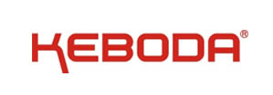
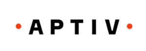
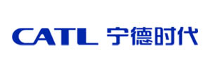
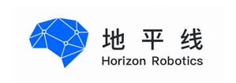
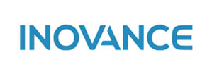
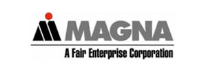
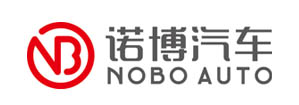

APS-4001
自动化量产烧录站
专为高效离线 IC 烧录而设计
集自动供料、视觉定位、精准取放、并行烧录与自动收料于一体，适用于高精度、高产能的芯片离线量产烧录场景。

01
核心优势
自动化离线烧录
全流程自动化作业，减少人工干预，提升效率与一致性。
高速稳定量产
并行烧录与高速运动控制，满足高产能、长时间稳定运行。
高精度视觉定位
视觉识别与精准定位，确保取放与烧录的高良率。
多种供料方式
支持托盘、卷带、管装等多种供料方式，灵活适配生产需求。
02
自动化烧录流程
APS-4001 自动化完成整套离线 IC 烧录流程，高效、稳定、可靠。
- 01

供料
- 02

视觉识别
- 03

精准取放
- 04
并行烧录
- 05

结果判定
- 06
自动收料
03
三大核心系统
A

FlashLink 自研烧录核心
- ARM + FPGA 架构
- 多协议支持
- 多芯片兼容
- 工业级可靠
- 最多支持 8 颗芯片并行烧录
B

高精度视觉定位系统
- CCD 视觉检测
- 快速模板比对
- 精准芯片定位
- 提升换型效率
C

可视化生产管理系统
- 配方管理
- 报警与状态监控
- 日志报表
- MES / ERP 对接
04
自动化量产能力
支持多种封装
SOP / SSOP / TSSOP / PLCC / QFN / QFP / BGA
双重防叠料保障
防止多片叠料、漏料，保障烧录良率。
高速稳定运行
高性能运动控制与并行烧录，满足量产烧录需求。
自动生成追溯报表
烧录数据自动记录，支持追溯与分析。
适用于更高精度与产能要求场景
满足精密制造行业的高标准需求。
维护便捷，换线高效
模块化设计，维护简单，快速切换产品。
05
模块化上下料
多种上下料模块，按生产需求灵活配置。

托盘进出料机
兼容多种托盘规格，稳定可靠，自动上料与下料。

卷带收料机
自动收卷与张力控制，防止皱褶，保证收料整洁有序。

管装进料机
适配管装 IC 供料，高速稳定，支持连续上料。
06
APS-4001 规格参数
- 产能
- 最高可达 1500 UPH（因 IC 类型而异）
- 视觉处理
- 130 万像素相机，图像精度 ±0.01 mm
- 运行机构
- 高精度直线运动模组
- 驱动系统
- 高精度伺服电机
- 真空系统
- 两个高精度真空吸嘴
- 分辨率
- X / Y / Z 轴：±0.01 mm；U 轴：±0.15°
- 控制系统
- 工业电脑 / Windows 10 / 21 英寸显示器
- 通信接口
- 以太网 / USB 3.0 / USB 2.0
- 上下料方式
- 托盘 / 卷带 / 管装
- 公用工程
- 220–240 VAC，单相，50–60 Hz，0.6 MPa
- 气源
- 0.6 MPa，45 L/min
- 换型时间
- ≤10 分钟
07
合作伙伴
提供专业的烧录技术和定制化的烧录解决方案







NEXT STEP
为全球电子产品生产客户提供更高效、更安全、更经济的烧录测试服务
联系销售工程师获取技术解决方案